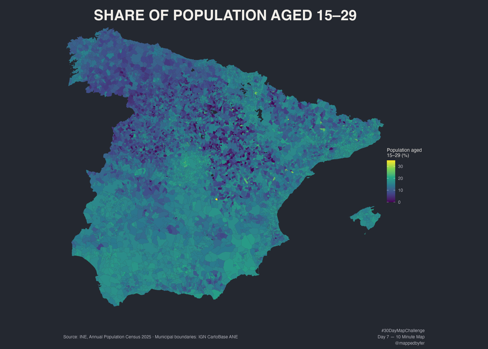

Share of Population Aged 15–29

One dataset, one join, one choropleth.
A straightforward municipal map of the share of residents aged 15–29. The indicator is calculated from the latest INE Annual Population Census figures available in the project: 1 January 2025.
The idea
Return to an introductory GIS exercise: one indicator, one municipal-code join and one choropleth. The age group 15–29 is a clear, user-defined measure for this map, not a specific INE classification or a proxy for migration, employment or growth.
How it was made
For each municipality, the population aged 15 through 29 is divided by total population and multiplied by 100. The resulting values are joined to official municipal boundaries valid on 1 January 2025. The map includes 8,028 municipalities on the peninsula and Mallorca. The choropleth uses the Viridis continuous palette on a dark grey background.
Sources & limitations
Population: INE table 68542, population by sex and age, year by year. Boundaries: IGN CartoBase ANE via mapSpain, CC BY 4.0. The underlying INE extract includes 8,132 municipalities; the Canary Islands, other Balearic islands, Ceuta and Melilla are outside this map's extent. The population-weighted national share is 16.5%. The mapped share describes age composition at one date, not a trend.